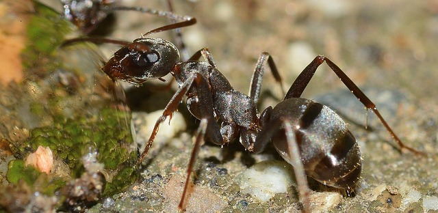

ТОП цікавих фактів про мурах
1. У світі існує 8800 видів мурах.
2. Мураха може підняти вагу в 100 разів більше ніж свою.
3. Мурахи ніколи не сплять.
4. Мурахи нападають на любу здобич тому ,що вони всеїдні.
5. Комаха за найбільшим мозком по відношенню до тіла - мураха.
6. Деякі види мурашок можуть пролежати під водою до чотирьох діб, а потім, витягнуті звідти на сухе тепле місце, незабаром оживають і ведуть себе далі як ні в чому не бувало.
7. Мурахи ведуть себе по-різному в групах різної щільності, причому у великих колективах ці комахи стають більш агресивними.
8. Після зими мурахи, щоб зігріти свій мурашник, починають вилазити з нього і приймати сонячні ванни. Потім вони повертаються назад в мурашник, приносячи на собі тепло.
9. Раніше вважалося, що мурашки знаходять дорогу додому завдяки особливим ферментам. У ході дослідів, проведених над комахами, було доведено, що насправді мурахи … рахують та відстежують свої кроки! На тілі мурашки є особливий «крокомір», який і відміряє відстань до мети.
10. За своїм суспільним устроєм мурахи – найбільш близькі до людини істоти на Землі.
Перейти до наступної тварини